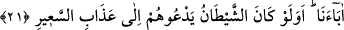

kılması ve sana lütfettiği rızıklardır. Gizli/bâtın nîmetler ise kötü amellerini
gizlemesi ve onlarla seni rezil rüsvay etmemesidir.”
Perde gerisinde çirkin ve kötü amelleri görür de
Kendi verdiği nîmetlerin üzerine perde çeker.
“Ey İbn Abbas! Allah Teâlâ şöyle buyurur: “Mü’min için üç şey takdir ettim: Ölüp
ameli sona erdikten sonra mü’minlerin ona duâsı ile onun hatalarını bağışlarım.
Hatalarını telafi etmesi için ona malının üçte birini vasiyet etme imkanı verdim.
İnsanlara gösterecek olsam âilesinin ve başkalarının kendisini terk edeceği kötü
amellerini gizledim.”[98]
“Yine de, insanlar içinde,” -bir delilden alınmış “bilgisi,” peygamber cihetinden
“rehberi ve” Allah Teâlâ’nın indirdiği “aydınlatıcı” delil ile kendisine aydınlatan “bir
kitabı yokken- Allah”ın birliği ve sıfatları “hakkında tartışan” meleklerin Allâh’ın
kızları olduğunu iddiâ ederek şirke yönelen “kimseler” bazı insanlar “vardır.”
Kâşifî der ki: “Allah hakkında tartışan”, Allâh’ın kitabında tartışan demektir. Yâni,
Nadr b. Hâris (Kur’ân hakkında) “Eskilerin efsaneleridir” derdi. Aynü’l-maânî’de
nakledilir ki yahudilerden birisi Hz. Peygamber’e “Senin Rabbin nasıl bir şeydir?” diye
sordu. O anda gökten üzerine bir yıldırım geldi (ve onu helâk etti). Bunun üzerine
Hakk’ın zâtı hakkında tartışan bu kimse ile ilgili bu âyet nâzil oldu.
Bu kimseler sırf taklid ile mücâdele edip tartışırlar. Nitekim Allah Teâlâ şöyle
buyurur:
21. Onlara “Allâh’ın indirdiğine uyun” dendiğinde: Hayır, biz babalarımızı
üzerinde bulduğumuz yola uyarız, derler. Ya şeytan, onları alevli ateşin azabına
çağırıyor idiyse!
“Onlara” yâni Allah hakkında tartışanlara “Allâh’ın” peygamberine “indirdiğine”
mânâları açık Kur’ân’a ve o apaçık nûra “uyun”, îman edin “dendiğinde: “Hayır, biz”
geçmiş “babalarımızı üzerinde bulduğumuz yola uyarız” derler.” Bu sözle onlar,
putlara tapmayı kastediyorlar. Allah Teâlâ onlara cevap olarak şöyle buyurur: “Ya
şeytan, onları alevli ateşin azabına çağırıyor idiyse!” Buradaki soru, inkâr ve taaccüb
içindir. Çünkü böyle bir hal, aklın gereklerinden son derece uzaktır. Yâni şeytan
kendilerini atalarının bağlı olduğu şirke çağırıyor idiyse, yine de onlara uyarlar mı?
Evet onlar, şeytan kendilerini çağırdığı ölçüde onun dâvetine icabet ederler.